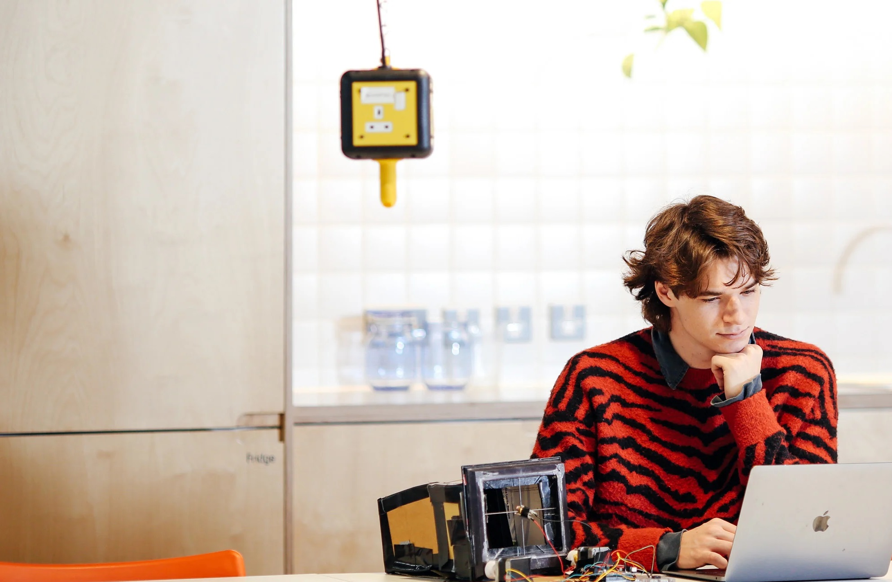

Josef Murmann
I’m Josef Murmann, passionate about innovating with emerging technologies to deliver impactful, interactive experiences. I recently graduated with a First Class Honors degree in Photography with Creative Computing from the University of the Arts London. Doing the intercalated year at the Creative Computing Institute alongside my time as a mechanic has given me a strong foundation in both my technical and creative skillset. I specialize in physical computing, UI/UX, and web design. I’m skilled in taking ideas from conception to completion through prototyping, design, research, and dynamic problem solving. allowing me to create experiences that are both functional and engaging.